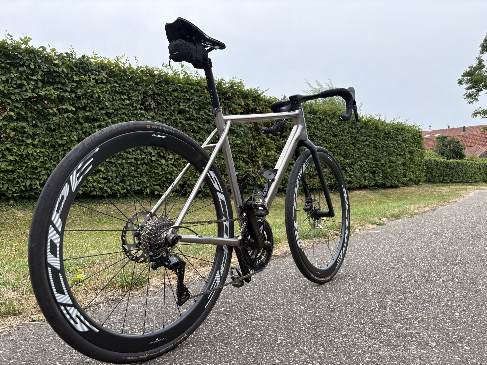
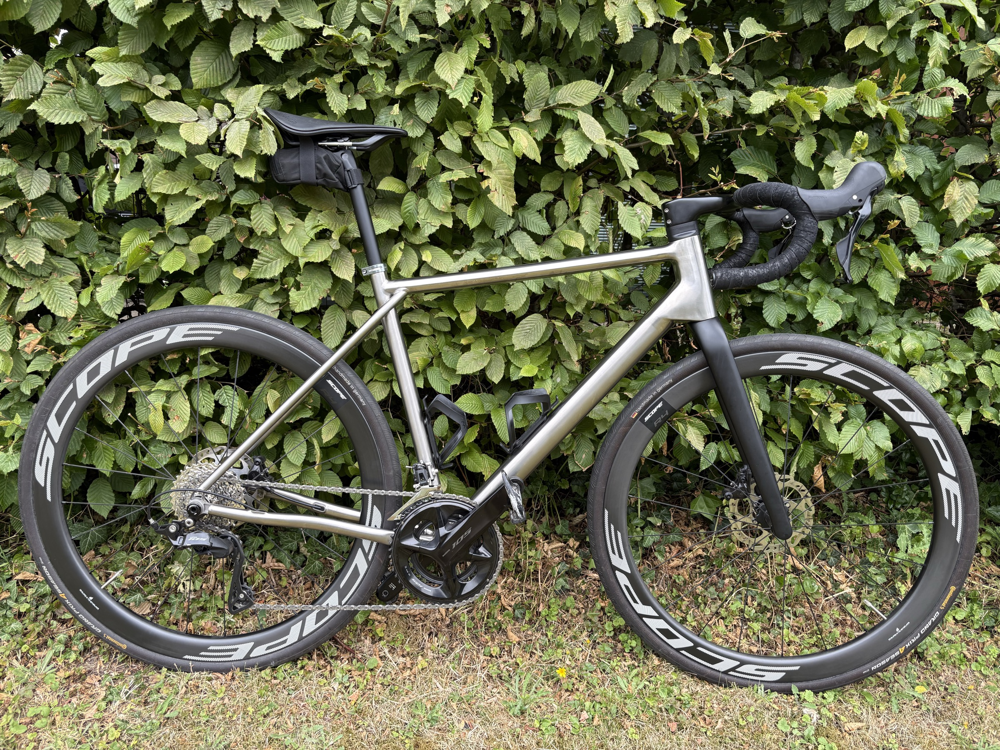
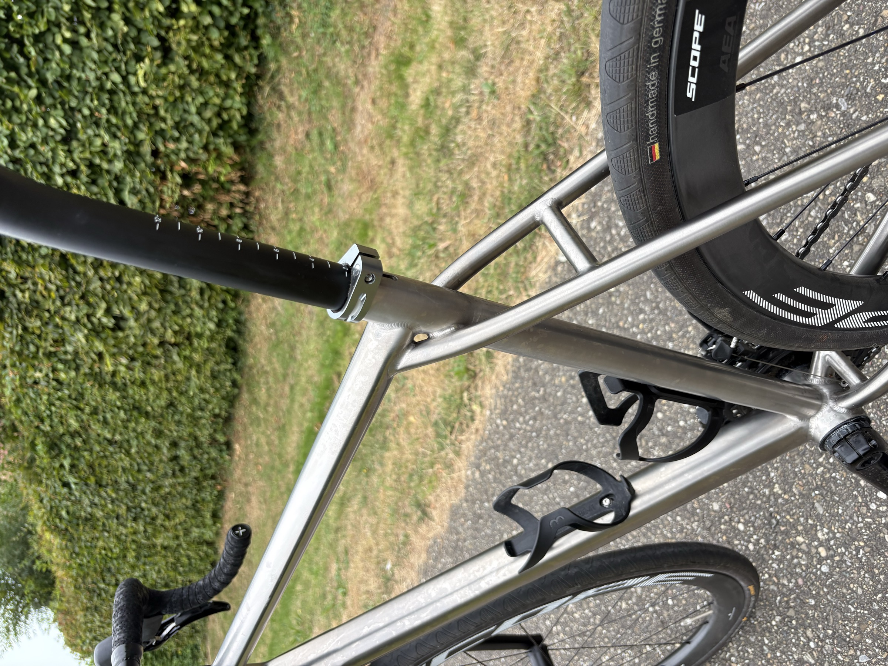

TITANIUM · ROAD · GRAVEL · NEDERLAND
Je laatste
fiets.
Eén titanium frame dat racefiets en gravelbike is. Gebouwd om elke fiets na deze overbodig te maken.
Vraag het frame aanDe fietsindustrie draait op vernieuwen. Elk jaar nieuwe jaargangen, nieuwe redenen om te upgraden, en materialen die na tien jaar geen onderdelen meer kennen. Koolstofvezel breekt zonder waarschuwing. Frames worden discontinued. Een fiets van vijf jaar oud is technisch prima maar voelt al verouderd.
Titanium veroudert niet op die manier. Het roest niet, vermoeit nauwelijks en heeft geen lak nodig. Een goed gebouwd frame overleeft de componenten die erop zitten, en ziet ze meerdere keren vervangen worden.
Niet alleen het frame. De groepsets die wij kiezen gaan decennia mee. De wielen zijn te repareren. Elk onderdeel is geselecteerd op levensduur, niet op jaargangcyclus.
Daarom bouwen we er precies één. Geen jaargangen. Geen collecties. Geen opvolger.

HET FRAME
Eén frame, twee fietsen

- Bandenruimte
- tot 32 mm
- Opzet
- Snel op asfalt, lange trainingen, wedstrijden
- Wissel
- Ander wielset erin en je staat op gravel
- Legering
- 3Al/2.5V titanium
- Framegewicht
- volgt na weging
MATERIAAL
Geborsteld titanium, geen lak
Het frame is gebouwd uit 3Al/2.5V titanium buizen en wordt geassembleerd in Nederland. De lasnaden blijven zichtbaar. De afwerking is geborsteld metaal, dus krassen poets je weg in plaats van dat je ze overspuit.
- Legering3Al/2.5V titanium
- AfwerkingGeborsteld, ongelakt
- AssemblageNederland
- RemmenVlakke montage schijfrem

GEOMETRIE
Jouw maat komt van een bikefitter, niet uit een dropdown
We bouwen aan een netwerk van bikefitters in Nederland. Zij meten je op voordat je bestelt, en die meting bepaalt je maat en afbouw. De volledige geometrietabel staat hier zodra de eerste meetronde is afgerond.
| Maat | Stack | Reach | Zitbuishoek | Balhoofdhoek |
|---|

STEL JE FIETS SAMEN
Kies jouw opbouw
Elk frame wordt gebouwd met de onderdelen die passen bij jouw gebruik. Selecteer hieronder jouw voorkeur. De meerprijs, het gewicht en de CO2 impact van elke keuze staan er direct bij. CO2 cijfers zijn indicatief op basis van industrie data — eigen meting volgt.
EERLIJK OVER CO2
Wat we nog niet weten, claimen we niet
nog geen gemeten cijfers
CO2 voetafdruk per frame
Zodra onze eerste meting er is, staat het getal hier. Niet eerder.
De duurzaamste fiets is er één die je nooit hoeft te vervangen. Daarnaast onderzoeken we partnerschappen met carbon credit fondsen om de voetafdruk van elk frame te compenseren. Zodra dat rond is, lees je hier precies hoe het werkt.
Startprijs complete fiets
€4.999
Basisopbouw: Shimano 105 Di2, aluminium wielset, compact stuur. Meerprijs per keuze staat in de configurator hierboven.
Levertijd
wordt nog bepaald
Serieuze interesse? Laat je gegevens achter, dan hoor je de prijs als eerste.
AANVRAGEN
Begin met een gesprek
Geen winkelmandje. Je laat je gegevens achter, wij nemen contact op en plannen een meting met een bikefitter bij jou in de buurt.